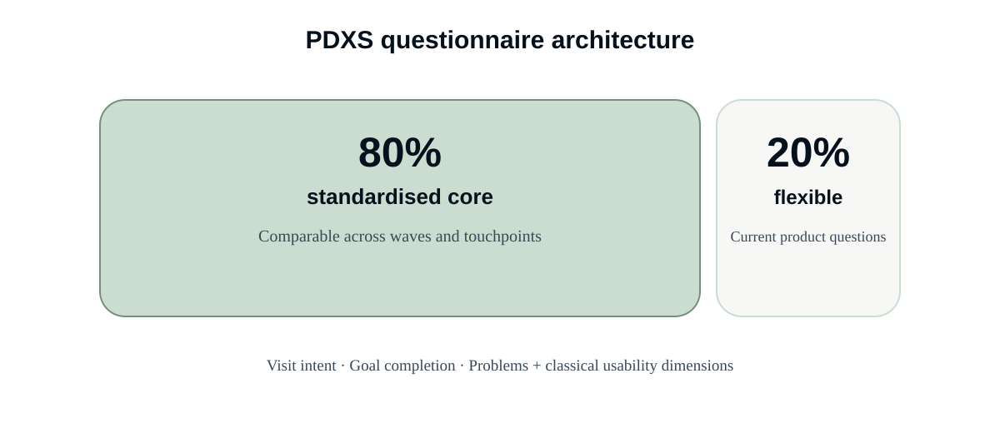
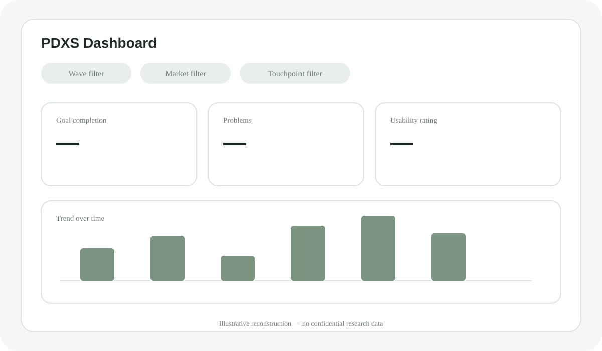

PDXS — continuous health checks for digital touchpoints
A flexible, repeatable in-house measurement program for customer-facing digital touchpoints, combining standardised benchmarking with room for changing product questions.
The external study was expensive, inflexible and a poor fit for the products.
Before PDXS, an external agency study was used for digital website evaluation. The setup had three structural limitations: it was expensive, the questionnaire could not be adapted, and the questions did not fit the needs of our digital products well enough.
PDXS was created in-house to address those same three problems: more control over cost, flexibility for changing questions and a measurement design that actually fits the products.
Standardisation where comparison matters. Flexibility where teams need it.
PDXS became a recurring in-house program for customer-facing digital touchpoints. The questionnaire combines a stable core with space for wave-specific product questions.

A general health check — not a single research question.
The core of the study identifies why people came to a touchpoint, whether they achieved their goal and which problems occurred. A classical usability component — for example design or usability ratings — complements these behavioural and task-oriented dimensions.
From PowerPoint reporting to self-service dashboards.
Reporting initially relied on PowerPoint. It was later moved to dashboards, reducing manual reporting effort and giving product teams the ability to explore results themselves through filters.

The program stays connected to real product questions.
The Researcher Pool sometimes runs workshops with product teams to identify the most important topics for the next wave.
The standardised core remains stable; teams use the flexible share for current questions.
Teams review results, use dashboard filters for their own analyses and discuss implications within their product teams.
Continuous measurement became a product capability.
less reporting effort per wave after the move from PowerPoint to dashboard reporting.
actual cost saving per wave, based on 30 days × €700 daily rate.
for health checks of customer-facing digital touchpoints at Porsche.
PDXS created a continuous evidence base that product teams could use to identify, prioritise and follow up improvement topics. Specific product findings are intentionally not disclosed here.